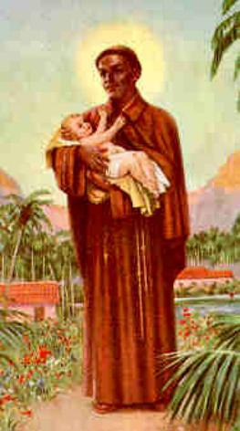
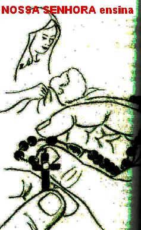
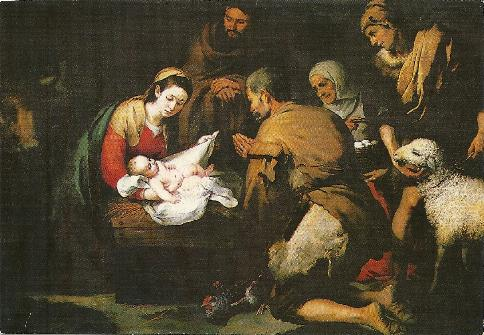

GUARDI�O
E OBREIRO
UMA MUDAN�A FOR�ADA
Pelo fato do s�tio dos Eremitas n�o ser longe do povoado, mais rapidamente a
fama de santidade dos Frades se espalhou em todas as dire��es e
primordialmente,
chegou ao conhecimento dos habitantes de S�o Filadelfo, que estava mais pr�ximo.
Ent�o aconteciam as naturais visitas, e com bastante frequ�ncia. As pessoas iam
a Santa Dom�nica procurar por Frei Benedito para pedir uma b�n��o, um conselho,
ou uma ora��o pelas suas necessidades ou por alguma doen�a. Com a sequ�ncia dos
meses, espalhou-se a noticia de que por intercess�o do Frade Benedito, DEUS
estava realizando milagres e concedendo gra�as �s pessoas que suplicavam com f�
e devo��o. Isto ocasionou um acr�scimo consider�vel de peregrinos, que
verdadeiramente passaram a interferir nas atividades e na ordem da Comunidade
Erem�tica. Acabou definitivamente com o sossego dos Frades e assim, o dilema
criado por aquela situa��o pedia por uma solu��o. Isto porque, proibir o acesso
do povo lhes parecia desumano, mas, se atendiam, n�o sobrava tempo para mais
nada. Na realidade, o problema atingia mais diretamente o Frade Benedito e
tamb�m o Frade Jer�nimo Lanza. Mas do mesmo modo, inclusive os outros se
sentiam incomodados, porque o volume de pessoas era muito grande, e elas se
deslocavam por todos os locais do S�tio. Foi ent�o que em sigilo decidiram
abandonar o local.
Como nada possu�am
a bagagem para a mudan�a era muito pequena e n�o apresentava nenhuma dificuldade.
Cada um arrumou os seus
�trapinhos� e p� na estrada. E decididamente
seguiram para o Vale Nazana. Ali se instalaram e logo reiniciaram as suas atividades.
Frei Benedito e seus companheiros rezavam e faziam severas penit�ncias pela convers�o
dos pecadores e santifica��o da humanidade. O Vale era bem escondido, e por isso
mesmo, os Frades Eremitas puderam se dedicar ardorosamente aos sacrif�cios e
objetivos que espiritualmente todos desejavam, praticamente n�o sendo incomodados
por visitantes. Poucas pessoas descobriram que eles estavam por ali.
Depois de oito anos em Nazana, a Provid�ncia Divina inspirou os Santos Eremitas
a seguirem para Mancusa. Um pequeno lugarejo a 15 quil�metros de Palermo. E
escolheram um local de dif�cil acesso, com muita rocha e cheio de cavernas, que
serviam de abrigos a lobos e a outros animais selvagens. Os Frades foram
avisados dos perigos daquela regi�o pelo povo de Mancusa. Mas eles n�o temeram,
e inclusive, de certa forma at� gostaram, pois imaginaram que sendo um local
perigoso, n�o seriam incomodados pelas pessoas.
E
com certeza, S�o Francisco de Assis conseguiu de DEUS a necess�ria prote��o para
os seus Frades, de tal forma, que os animais nunca os molestaram. L� os
franciscanos eremitas podiam rezar, cantar e realizar todos os seus trabalhos,
espirituais e materiais, e jamais foram incomodados.
Mas as noticias correram ligeiras
e alcan�aram velocidades imprevis�veis. Em Mancusa, o povo come�ou a tomar conhecimento
da presen�a dos Frades e a comentar: �Eles s�o Santos�... Diziam alguns:
�H� Frei Benedito que dizem,
consegue milagres de DEUS�...
Certo dia em que o Frade Benedito desceu at� o lugarejo para algum trabalho, ao
passar diante de uma pequena casinha que tinha v�rias pessoas na porta, algu�m o
chamou para ver uma doente. Ele humildemente parou e disse:
- �N�o posso fazer muita coisa, porque n�o sou sacerdote. Mas posso rezar por ela�.
Os
parentes da mulher imploraram:
- �Venha Frei, por
favor, ela est� sofrendo muito�.
A
mulher deitada estava toda corro�da por um terr�vel c�ncer no seio que se
alastrava pelo peito. Ela gritou desesperadamente:
- �Pelo amor de DEUS Frei, me d� uma b�n��o�.
Sensibilizado pelas dores daquela mulher e a afli��o dos parentes, Benedito se
aproximou do leito e piedosamente, com palavras simples, animou-a a ter f� na
miseric�rdia de DEUS e tra�ou o Sinal da Cruz sobre a chaga do seio. O milagre
aconteceu! Na presen�a de todos que choravam e contritamente rezavam,
instantaneamente a mulher ficou curada, a chaga cicatrizou.
O
susto e a alegria ocuparam a face das pessoas, enquanto Benedito com as fei��es
s�rias suplicava a todos:
- �Rezem e agrade�a a miseric�rdia de DEUS e as milagrosas M�os do SENHOR JESUS, Seu
DIVINO FILHO, que se fizeram presente, retirando o c�ncer desta mulher�.
Enquanto prostrados de joelhos todos rezavam fervorosamente, Frei Benedito
lentamente saiu daquele lugar e desapareceu, fugindo de qualquer louvor ou
agradecimento que quisessem fazer a sua pessoa.
A
not�cia deste milagre repercutiu muito e de uma maneira t�o estrondosa, que
verdadeiras romarias come�aram a se dirigir ao Eremit�rio dos Frades. Todos
queriam conhecer, conversar, pedir uma b�n��o ou uma ora��o a aquele homem
not�vel, a quem DEUS concedeu o dom da cura. Homens carregando macas e carro�as
transportando doentes diariamente chegavam, e era exatamente o que os Frades
temiam. Acabaram-se completamente o sossego e o sil�ncio que a Comunidade
necessitava �s suas ora��es e a vida contemplativa. Repetiam-se em Mancusa os
mesmos acontecimentos de Santa Dom�nica. N�o existia outra solu��o, por isso
mesmo, depois de v�rias reuni�es a Comunidade decidiu mudar para outro lugar.
DEUS PROVIDENCIAR� OUTRO
LOCAL
Com este pensamento abandonaram Mancusa, mas com grande tristeza e o cora��o muito
apertado, espremido pela dor de deixar aquele local t�o bonito, envolvido pelo
carinho da natureza que lhes propiciava maior fervor na vida contemplativa. Mas
eles precisavam de solid�o, a Comunidade n�o conseguia viver e nem respirar com
aquela frequ�ncia extraordin�ria de peregrinos em busca de lenitivo e cura para
os seus males.
E
assim, partindo de Mancusa, durante quatro anos vagaram por diversos lugares,
at� que por fim, se estabeleceu no Monte Pellegrino, perto de Palermo, um local
que j� estava santificado pela presen�a de Santa Ros�lia, falecida e ali
sepultada, no ano de 1160. Naquele local eles estabeleceram o seu Eremit�rio.
Por essa raz�o, anos mais tarde, o lugar passou a ser denominado de Monte Santa
Ros�lia.
Mas
tamb�m ali, eles n�o ficaram muito tempo, embora ganhassem a simpatia do
Vice-rei da Sicilia, Giovanni Lacerda, que desejando minorar a pobreza daqueles
humildes Frades, mandou construir uma casa, com Capela e uma boa cisterna,
considerando que a fonte de �gua ficava muito distante. Eles que sempre viveram
em choupanas isoladas, puderam denominar aquela constru��o de Convento da
Comunidade.
Tamb�m em Monte Pellegrino faleceu Frei Jer�nimo Lanza, que podemos dizer, era o
orientador da Comunidade e aquele que organizava as provid�ncias necess�rias ao
bem-estar de todos.
Desse modo, sua morte trouxe a principio certa desorienta��o a Comunidade, que
tinha uma vida t�o prec�ria e cigana. Mas na verdade, a Comunidade n�o chegou ao
seu final por falta de um chefe, ou de uma palavra autorizada e de decis�o
respons�vel. Isto porque, a presen�a de Frei Benedito al�m de ser uma garantia
de continuidade, inspirava respeito, confian�a e certeza de trilharem o melhor
caminho. Mas a Comunidade dos Franciscanos Eremitas chegou mesmo ao final pela
decis�o soberana da Igreja, que desde algum tempo vinha querendo reunir os
in�meros ramos franciscanos que existiam, e naturalmente, um desses ramos eram
os Irm�os Eremitas Franciscanos, fundado por Jer�nimo Lanza.
Assim, o Papa Pio IV, em 1562, cancelou a licen�a dada pelo Papa J�lio III
(1550-1555), extinguindo a Comunidade do Monte Pellegrino, ordenando que os
eremitas procurassem Conventos da Ordem Primeira Franciscana, ou voltassem para
as suas casas. Como aqueles eremitas da Comunidade de Jer�nimo Lanza eram
verdadeiros santos, e por isso mesmo, muito obediente, cada um seguiu o seu
caminho, ingressando na Ordem Franciscana da sua prefer�ncia. Benedito j� estava
com 36 anos de idade, tendo permanecido na Comunidade Erem�tica por mais de 15
anos.
O CONSELHO DA M�E DE DEUS

Sem saber para qual Convento se dirigir, Benedito foi rezar na Catedral de Palermo,
a fim de suplicar ao SENHOR e a VIRGEM MARIA, a luz do entendimento, para
orientar o caminho da sua vida.
Terminada as ora��es, decidiu ir procurar Frei Arc�ngelo de Scieli, guardi�o do
Convento Franciscano de Santa Maria de JESUS, a poucos quil�metros de Palermo.
Segundo o coment�rio do povo, ali residiam religiosos de grande santidade.
Benedito foi muito bem recebido pelo guardi�o e depois pelos irm�os da Ordem,
pois inclusive, a sua fama de santidade j� era do conhecimento de todos, e por
essa raz�o, eles esperavam a oportunidade de conhec�-lo pessoalmente e rezar na
companhia dele.
E
muito embora fosse um religioso professo a mais de 10 anos, os Superiores
mandaram Frei Benedito para o Convento de Sant�Ana di Giuliana, para uma esp�cie
de Noviciado, com objetivo dele se integrar e aprimorar a Regra Conventual. Ele
adaptou-se t�o bem, que por l� permaneceu cerca de tr�s anos. Cumprido o tempo
necess�rio, os Superiores determinaram o seu retorno a Santa Maria de JESUS,
onde viveu o resto da sua vida.
M�OS A OBRA NO CONVENTO
Sua primeira fun��o foi de cozinheiro.
Devia preparar o �feij�o�
do pessoal com muito amor e carinho, para mant�-los em forma
e estimul�-los ao trabalho. E desde esta �poca, a gra�a de DEUS atuou decisivamente
atrav�s das m�os de Frei Benedito, de modo que deixava todos bem alimentados,
alegres e at� muito felizes. Sempre havia um intenso j�bilo no cora��o de
todos aqueles que frequentavam o refeit�rio da
Comunidade Franciscana.
Certa vez acabaram-se as provis�es do Convento. O Convento vivia de esmolas, da
mesma maneira como na �poca de S�o Francisco de Assis. Era uma �poca dif�cil em
consequ�ncia da minguada colheita, que impedia o normal abastecimento de g�neros
aliment�cios em muitas regi�es. Os Superiores do Convento sempre em busca de
solu��es acionaram todas as medidas poss�veis, e principalmente, suplicaram o
aux�lio Divino, no sentido de que a crise fosse debelada e o abastecimento
normalizado. Era �poca do inverno Europeu, e l� fora, as condi��es climat�ricas
anunciavam uma terr�vel tempestade. Como sair para pedir esmola e conseguir
alimento para a Comunidade?...
Enquanto os Frades rezavam na Igreja, Benedito com imensa confian�a na
Provid�ncia Divina se lembrou de uma passagem b�blica que numa ocasi�o
semelhante, tinha sido invocada por S�o Francisco: �N�o se inquietem quanto � sua vida, com o que v�o
comer ou beber, nem quanto ao vosso corpo com o que v�o vestir. Porventura n�o
� o corpo mais do que o vestido, e a vida mais do que o alimento? Olhem para
as aves do C�u: n�o semeiam, nem ceifam, nem recolhem em celeiros; e o PAI
Celeste as alimenta�. (Mt 6,25-26)
Com
o cora��o vibrando de amor, junto com o seu auxiliar, acionou uma s�rie de
provid�ncias na Cozinha, enchendo com �gua todas as panelas, tachos e latas
grandes que havia na casa. E depois foram descansar. De manh�, que maravilha:
a miseric�rdia Divina se manifestou num prodigioso milagre: Todas as vasilhas
estavam cheias de peixes frescos, alguns deles ainda vivos. O milagre de DEUS
propiciou refei��o abundante por muitas semanas, a toda Comunidade Religiosa.
CEIA DE NATAL
O senhor Arcebispo de
Palermo, Dom Diogo d'Abedo, quis celebrar a Ceia de Natal, na companhia da
Comunidade Franciscana. Como sabemos os Franciscanos no mundo inteiro, sempre
gostaram de celebrar o Nascimento de JESUS com muita contempla��o e a��o de
gra�as, n�o s� para manifestar um profundo amor ao FILHO DE DEUS, como para
relembrar que foi S�o Francisco o autor do primeiro pres�pio, em honra e
homenagem a NOSSO SENHOR, pela nossa vida e reden��o.

E por isso mesmo, Frei
Benedito estava l� na Igreja, diante de um quadro com a imagem da VIRGEM
MARIA e do MENINO JESUS, que ficava ao lado do altar-mor, rezando, contemplando
e agradecendo os dons e as virtudes da nossa exist�ncia. Mas, e a cozinha? Ser�
que Frei Benedito se esqueceu de preparar a Ceia para a Comunidade receber a
visita do senhor Arcebispo? As horas passavam ligeiras e ele n�o aparecia na
Cozinha... O seu auxiliar estava apavorado e sem saber o que fazer. Onde est�
o cozinheiro? Ningu�m sabia! Neste momento, o auxiliar deixou o seu posto e foi
avisar aos organizadores do evento, que rapidamente sa�ram � procura de Frei
Benedito, e o encontraram na Igreja, mergulhado profundamente na ora��o,
diante de um bonito quadro do pres�pio de JESUS. Eles gritaram
assustados:
- �Frei Benedito,
j� est� quase na hora do almo�o e o senhor Arcebispo de Palermo j� est� quase
chegando! Como foi acontecer uma coisa desta? Que vergonha para n�s!�
Respondeu o Santo:
- �Calma gente, est� tudo pronto. Quando Sua
Excel�ncia estiver � mesa, a comida ser� servida quentinha�.
Eles, sem saber o que falar, e sem entender o que acontecia, crist�mente
decidiram pelo sil�ncio.
Frei Benedito se dirigiu a cozinha e l�, para surpresa geral, tudo estava
pronto. Apenas ele se apressou em tirar as comidas das panelas, coloc�-las nas
travessas e entreg�-las aos confrades que ajudavam a servir, a fim de lev�-las �
mesa. �Mas como aconteceu
isto?� Exclamou o irm�o auxiliar da cozinha.
� �� meia hora atr�s n�o havia nem
panelas no fogo!�... Todavia, n�o faltaram
testemunhas! Quando o auxiliar da cozinha saiu para avisar sobre a aus�ncia de
Frei Benedito, dois Frades estudantes de teologia viram chegar ao local dois
jovens de grande beleza, que mexeram para c� e para l� na cozinha e rapidamente
aprontaram o almo�o, enquanto Frei Benedito rezava na Igreja. Outros conclu�ram:
�Sem d�vida, eram dois Anjos
de DEUS�. O fato � que m�os estranhas, mas
muito competentes, tinham preparado um magn�fico banquete de Natal, para toda a
Comunidade e para o senhor Arcebispo de Palermo, deixando todos eles muito
felizes e satisfeitos com aquele especial almo�o.
GUARDI�O DO CONVENTO
Guardi�o � o titulo dos Superiores dos Conventos Franciscanos. Em 1578,
reuniu-se o Cap�tulo Provincial dos Franciscanos, no Convento de Santa Maria dos
Anjos, em Palermo. Padre Pedro Cilento, Doutor da Universidade e Visitador da
Prov�ncia de Val Mazzara, atendendo ao desejo de muitos religiosos que pediam
uma observ�ncia mais exata da Regra Franciscana, em virtude da Bula do Papa
Clemente VII (Bula "in Suprema"), deu autoridade � reforma
ao Frei Boaventura de Girgenti que era o Superior em Santa Maria de JESUS.
Na verdade, a maioria dos Conventos acolheram prontamente o des�gnio do Papa.
E assim, Frei Benedito que estava com 52 anos de idade, foi nomeado Guardi�o
do  Convento de Santa Maria de JESUS. Este foi um fato rar�ssimo ocorrido na hist�ria
das Ordens Religiosas, em que os membros de uma Comunidade escolheram para seu
Superior um leigo religioso, quando nela existiam diversos sacerdotes, com reconhecida
capacidade de administrar. Este acontecimento singular e admir�vel � suficiente
para avaliarmos o not�vel prest�gio que o humilde e Santo Frei Benedito possu�a
junto aos seus Irm�os Franciscanos. Em outras palavras, coloca a convic��o em
nossa mente, de que eles tamb�m reconheciam em Frei Benedito, al�m das suas
qualidades e virtudes para rezar, contemplar e amar a DEUS, de saber cozinhar,
de dar o bom exemplo e respeitar a ordem estabelecida, nele apreciava tamb�m as
qualidades de dirigente e organizador.
Convento de Santa Maria de JESUS. Este foi um fato rar�ssimo ocorrido na hist�ria
das Ordens Religiosas, em que os membros de uma Comunidade escolheram para seu
Superior um leigo religioso, quando nela existiam diversos sacerdotes, com reconhecida
capacidade de administrar. Este acontecimento singular e admir�vel � suficiente
para avaliarmos o not�vel prest�gio que o humilde e Santo Frei Benedito possu�a
junto aos seus Irm�os Franciscanos. Em outras palavras, coloca a convic��o em
nossa mente, de que eles tamb�m reconheciam em Frei Benedito, al�m das suas
qualidades e virtudes para rezar, contemplar e amar a DEUS, de saber cozinhar,
de dar o bom exemplo e respeitar a ordem estabelecida, nele apreciava tamb�m as
qualidades de dirigente e organizador.
Isto por que, o Superior de uma Comunidade Religiosa deve ser um bom
administrador: dando ou negando licen�as solicitadas; deve saber analisar a
presta��o de todas as contas, assim como dos gastos extras; � ele quem preside
todas as reuni�es da Comunidade, assim como as ora��es comunit�rias; � ele quem
escala os trabalhos apost�licos e � o primeiro a trabalhar; um Superior Santo,
santifica os seus confrades; um superior relaxado instala a bagun�a generalizada
em todo o Convento. Por isso mesmo, todos aqueles que escolheram Frei Benedito
para ser o Guardi�o do Convento de Santa Maria de JESUS, n�o olharam para os
seus estudos que eram muito poucos, mas enxergaram a sua santidade que era muito
grande, era imensa. Sem saber ler, conhecia muito bem a palavra de DEUS, e mesmo
a Teologia, a tal ponto, que tinha argumentos t�o claros e coerentes, que
espantava at� os estudiosos. Conhecia e vivia com perfei��o, as regras da sua
Ordem Religiosa.
Ent�o, n�o � motivo para ningu�m se admirar ou ficar escandalizado com o
acontecimento. Na verdade, quem estranhou o fato foi ele mesmo, Frei Benedito na
sua humildade honesta e pura, n�o quis aceitar o cargo de maneira nenhuma.
Chegou a argumentar assim:
- �Eu, um pobre religioso leigo, analfabeto, ser o
Superior dos meus confrades Sacerdotes, dos quais n�o sou digno de desatar as
correias das suas sand�lias? Ser Guardi�o deste Convento da M�E DE DEUS, que j�
� guardado pelos Anjos do SENHOR? N�o posso aceitar.�
Com
veem�ncia ele apresentou aos seus Superiores as suas escusas. Mas sua recusa n�o
foi aceita, todos estavam convencidos de que tinham feito a melhor escolha, ou
seja, conscientemente haviam rezado e solicitado a Luz do ESP�RITO SANTO, ent�o
ali estava manifestada a Vontade de DEUS e, portanto, era hora de obedecer,
conforme disse o Superior Frei Boaventura de Girgenti.
Frei Benedito abaixou a cabe�a e
falou: �Seja feita
a vontade do senhor�. E permaneceu no
cargo durante tr�s anos, prestando magn�ficos servi�os a Comunidade Franciscana.
Mas
nem pelo fato de ser o Guardi�o do Convento, a autoridade maior da Comunidade,
deixou Frei Benedito de desempenhar os outros modestos trabalhos da casa. Assim,
o Guardi�o era visto ora na cozinha, na horta, ou com uma vassoura na m�o
varrendo algum c�modo. O esp�rito de co-responsabilidade levava o Santo a
compartilhar de todos os trabalhos do Convento, e desse modo, havia alegria e
disposi��o em todos, tudo prosperava.
N�O NEGAR NADA AOS POBRES
E FAMINTOS
Um
dos casos mais extraordin�rios que aconteceu no tempo da administra��o do
Guardi�o Frei Benedito foi durante um quotidiano atendimento na Portaria do
Convento, para socorrer os pobres e famintos.
Como j� mencionamos anteriormente, o Convento vivia de esmolas e por isso mesmo,
n�o possu�a um estoque de alimentos, mas sim uma pequena reserva para uso di�rio
da Comunidade e que com bastante economia, poderia sobrar algo para o dia
seguinte. Apesar desta realidade, o Guardi�o Frei Benedito deu uma ordem clara
ao Irm�o Porteiro: Nenhum
pobre pode ser despachado, sem ser atendido�. Assim, Frei Benedito
queria que fosse vivido na realidade o preceito de JESUS: �D�em de gra�a o que de gra�a receberam�.
(Mt 10,8)
Certa vez, o Porteiro Frei Vito, ao distribuir para os pobres os
p�es que estavam na cesta, percebeu que a fila era muito grande e os p�es que
restavam eram exatamente para atender a Comunidade Religiosa. Ent�o, encerrou a
distribui��o e despachou os pobres. O fato chegou ao conhecimento do Guardi�o,
que intimou o bom Porteiro, sair correndo atr�s dos pobres que ficaram sem p�o e
traz�-los de volta ao Convento, e lhe deu a ordem com severidade:
- �D� aos pobres tudo o que estiver no cesto, isto
por que, a Provid�ncia Divina sempre encontrar� o melhor meio para nos
socorrer�.
O
Irm�o Porteiro muito assustado com aquela ordem, abaixou a cabe�a e obedeceu.
Trouxe os pobres e organizou uma longa fila. Foi � despensa, pegou o cesto com
os poucos p�es e re-iniciou a distribui��o. No principio ele estava muito s�rio
e com as fei��es bem fechadas, mas come�ou a observar que algo de extraordin�rio
acontecia, por que os p�es n�o acabavam nunca, quanto mais eram distribu�dos se
multiplicavam no cesto. O espanto e a alegria encheram o cora��o e a face do
Irm�o Porteiro, que ent�o, viu em toda plenitude a grandeza do milagre de DEUS,
uma nova �multiplica��o
de p�es�.
Terminada a distribui��o, com a maior surpresa ele observou que os p�es que
sobraram no cesto, os quais seriam utilizados pela Comunidade Religiosa, eram
exatamente a mesma quantidade anterior. A Provid�ncia Divina atuou e determinou
que todos fossem igualmente bem servidos.
�
por isso que em todos os anos, nos dias da Festa do Santo, em homenagem a este
fato e tamb�m, lembrando aquele outro milagre de DEUS acontecido pela
intercess�o de Santo Antonio, muitas pessoas caridosas, em diversas partes do
mundo, compram sacos de p�es e entregam a Igreja para serem distribu�dos aos
pobres.

Pr�xima P�gina
P�gina Anterior
Retorna ao �ndice